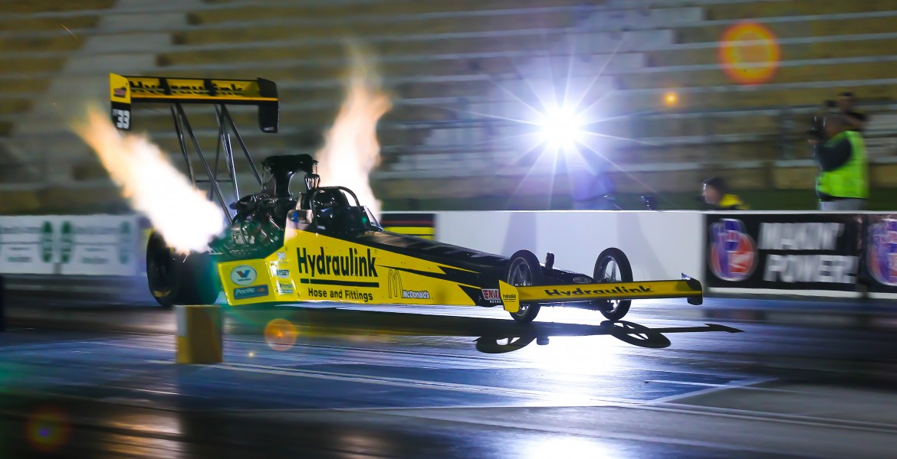
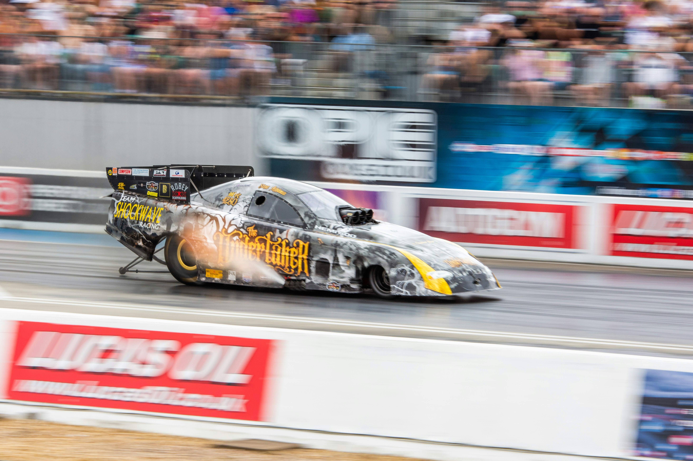

Clase de Competiție
Clase FIA & NHRA Profesionale
Sistemul de clasificare FIA și NHRA împarte vehiculele în categorii distincte, determinate de tipul de motor, combustibilul utilizat și nivelul de modificare față de specificațiile de serie. Fiecare clasă are propriile limite tehnice, impuse prin regulament omologat anual.

Top Fuel Dragster
Clasa de vârf a drag racing-ului mondial. Vehiculele utilizează motoare supraalimentate de 500 CID (8,2 L), alimentate cu nitromethan 90%, care generează între 8.000 și 11.000 CP. Sfertul de milă este parcurs în sub 3,7 secunde, la viteze ce depășesc 530 km/h.

Funny Car
Categoria utilizează aceeași tehnologie de motor ca Top Fuel Dragster, însă vehiculele sunt echipate cu o caroserie flip-top care imită silueta unui automobil de serie. Ampatamentul mai scurt face vehiculul mai dificil de controlat. ET tipic: sub 3,9 secunde.
Pro Stock
Supranumite „Factory Hot Rods", aceste vehicule păstrează o siluetă apropiată de modelele de producție, dar sunt echipate cu motoare aspirate natural de 500 CID, fără turbocompresie sau nitromethan. ET tipic: circa 6,5 secunde la 340 km/h.
Pro Stock Motorcycle
Motociclete cu motoare de peste 1500 cm³ și aproximativ 280 CP, care parcurg sfertul de milă în circa 6,8 secunde la 310 km/h, fără cutie de viteze — transmisie directă.
Top Alcohol Dragster
O treaptă inferioară față de Top Fuel, această clasă utilizează metanol sau nitromethan diluat, cu o putere de aproximativ 4.000 CP. Reprezintă o cale de acces accesibilă spre nivelul profesionist. ET tipic: sub 5,2 secunde.
Top Alcohol Funny Car
Aceleași specificații tehnice ca Top Alcohol Dragster, dar cu caroserie tip Funny Car. Oferă un spectacol vizual deosebit și atrage mulți sponsori datorită suprafeței mari de branding.
Clase Compact & Street
Clasele compacte și de stradă sunt concepute pentru a fi accesibile publicului larg. Vehiculele pot fi folosite în trafic cotidian și modificate progresiv, pe măsura creșterii bugetului și experienței pilotului. Aceste clase reprezintă principalul punct de intrare în motorsportul de drag pentru amatori și semi-profesioniști.
| Clasă | Tracțiune | ET tipic | Descriere |
|---|---|---|---|
| Street | FWD / RWD / AWD | 12 – 16 sec | Vehicule rutiere omologate, modificări minime permise |
| Street FWD | Față (FWD) | 10 – 13 sec | Tracțiune față; frecvent cilindree mici cu turbocompresor |
| Pro FWD | Față (FWD) | 8 – 10 sec | Modificări extensive, turbo de mare debit, roll bar obligatoriu |
| Street RWD | Spate (RWD) | 10 – 13 sec | Tracțiune spate; mașini musculare sau sportive modificate |
| Pro RWD | Spate (RWD) | 7 – 9 sec | Motor de mare putere, suspensie de competiție, bare de siguranță |
| Pro AWD | Integrală (AWD) | 7 – 9 sec | Tracțiune integrală; aderență superioară și putere maximizată |